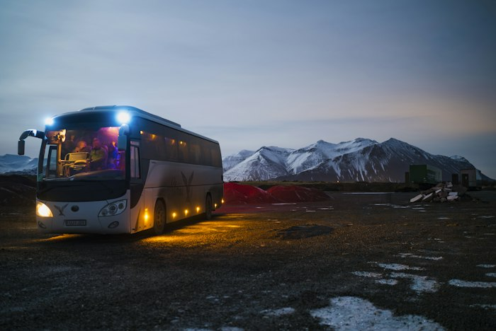

Training Opportunities in Makindye
Below are verified beginner ICT training options linked to the Kabalagala Youth One Stop Centre. Always check the official page for the latest fees and deadlines. Details were last confirmed in 2026.
Provider Cards

MTN Skills Academy
Location: Kabalagala Youth One Stop Centre (Makindye Division)
What it offers: Practical digital literacy courses installed on 15 dedicated computers at the centre.
Prerequisites: None. Computers provided on-site at Kabalagala Youth Centre.
Eligibility: Youth aged 15–30 residing in Makindye or Kabalagala & Greater Kampala.
Fee: 100% Free under KCCA & MTN public partnership.
Last checked: November 2026
Official Information & Registration
MTN Internet Bus Programme
Location: Kabalagala Youth Centre (Rotational stops across Makindye)
What it offers: Hands-on computer fundamentals, internet safety, and digital entrepreneurship. 58 local youth graduated in 2026.
Prerequisites: Open to absolute beginners. Equipped with mobile solar power and satellite internet.
Eligibility: Young people, school leavers, and informal business operators.
Fee: 100% Free via MTN Foundation community outreach.
Last checked: November 2026
Check Bus Schedule & Announcements
Makindye Community ICT & Tech Hub
Location: Near Kansanga / Ggaba Road, Makindye Division
What it offers: Intermediate courses in website building, office productivity tools, and freelance data entry basics.
Prerequisites: Bring Your Own Laptop (BYOD) or reserve workstation during lab hours.
Eligibility: Youth with basic computer knowledge seeking job-readiness skills.
Fee: Subsidized community rate (scholarship waivers available upon application).
Last checked: November 2026
Inquire via Our TeamEligibility and Fee Notes
| Provider | Typical fee | Who can join | How to confirm |
|---|---|---|---|
| MTN Skills Academy | Often free / low cost | Youth at Kabalagala centre | Visit centre or KCCA page |
| MTN Internet Bus | Free (Foundation programme) | Youth, focus on digital skills | Watch for announcements |
Before-You-Apply Checklist
- Confirm the course is still open on the official page or at the centre
- Check the exact fee and what it covers
- Note the application deadline
- Prepare a simple CV or personal statement if required
- Have a working phone number and email address
- Ask about any required documents (ID, photos, etc.)
Opportunity Tracker
Print this table or copy it into a notebook to track the opportunities you are interested in.
| Provider / Course | Deadline | Fee | Status (Interested / Applied / Waiting) |
|---|---|---|---|